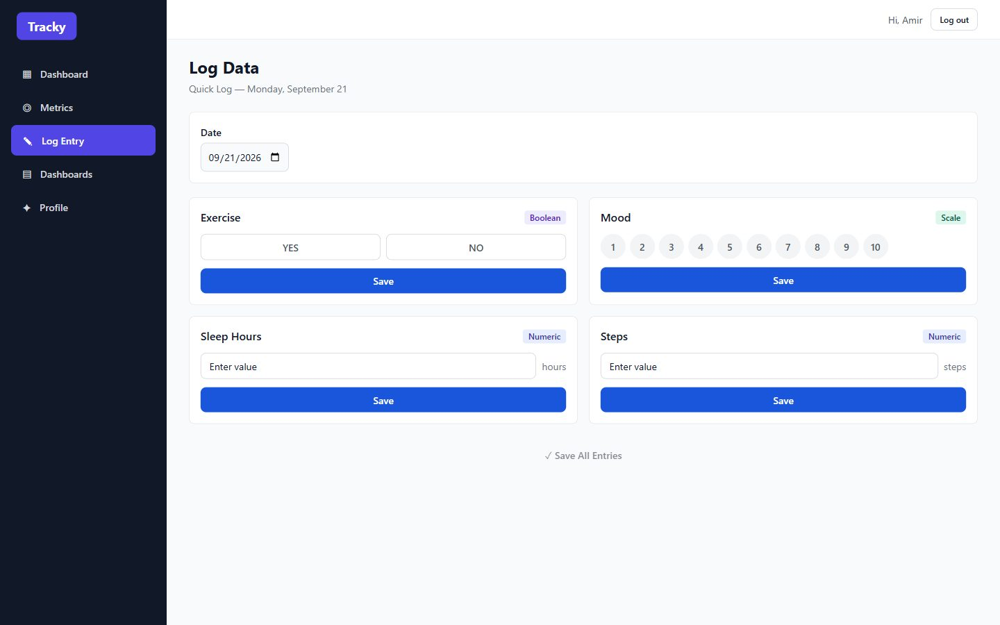

Tracky — Personal Analytics Dashboard
A Laravel 13 REST API and a React 19 TypeScript SPA
- Laravel 13
- PHP
- React 19
- TypeScript
- TanStack Query
- Cypress
View code on GitHub Back to portfolio



Overview
A personal analytics app built as two independent tiers: a Laravel 13 REST API and a separate React 19 single-page app in TypeScript. You declare the metrics you care about, log them daily, and assemble dashboards out of configurable chart widgets. This is the project on the list that is about building a system rather than analysing a dataset.
The problem
Most trackers decide for you what is worth measuring, and then bolt on options when that turns out to be wrong. Tracky inverts it: the user defines the metrics and the application adapts around their shape. That is only a good idea if adding a new kind of metric does not mean touching every screen — which is a design constraint, not a feature.
The data
A metric is declared as numeric (sleep hours, steps),
scale (mood 1–10) or boolean (did I exercise?). That
single type column then drives three separate things
downstream: which input control the logging screen renders, which chart
types the widget builder offers, and how streaks and averages are computed.
Adding a fourth metric type is a migration plus a renderer, not a rewrite.
Entries are unique on the metric and the date they belong to, so a bulk
"quick log" of every active metric for a day is one upsert rather than a
question about duplicates.
Approach
- Built the API in Laravel 13 with token authentication and typed JSON resources, so the shape of a response is defined in one place.
- Kept the front end entirely separate: a React 19 SPA in TypeScript that consumes the API over HTTP and shares no runtime with it.
- Enforced owner scoping at three independent server-side layers — middleware, policies, and query scoping. The front-end route guards are user experience only and are never load-bearing.
- Used optimistic updates for logging and for drag-and-drop widget reordering, with automatic rollback when the server rejects the change, so the interaction feels instant without lying about what was saved.
- Made the admin view role-gated and deliberately read-only: admins manage accounts, never somebody's data.
Results
A feature-complete two-tier application where the API and the SPA can be deployed and versioned independently, and where the client could be replaced without touching the backend. 50 PHPUnit feature tests cover the API contract, Cypress specs drive the real interface, and both run in CI alongside a CodeQL scan on every push. The layout is responsive down to a phone: the desktop sidebar becomes a tab bar and tables reflow into stacked cards.
What I would do differently
- Streaks and summaries are computed on every read. That is the right call for correctness — a stored counter is a second source of truth and it will eventually disagree with the entries — and the wrong one for scale. It wants a cache or a write-time rollup once the entry count grows.
- The API response types are hand-written on the client. Generating them from the backend would remove an entire class of drift, where the server changes a field and the client keeps compiling against the old shape.
- SQLite is the right choice for a single-user self-hosted app and the wrong one the moment two people write at once. The Eloquent layer makes the swap cheap, but nothing has verified that it is.
- The widget configuration is stored as loosely structured JSON. It should be validated against the metric type at write time, not trusted at render time.
Tech stack
Laravel 13 on PHP 8.4 with Sanctum, Eloquent policies, SQLite and PHPUnit on the API side; React 19, TypeScript in strict mode, TanStack Query, dnd-kit, Recharts, Tailwind CSS and Vite on the client; Cypress and GitHub Actions around both.